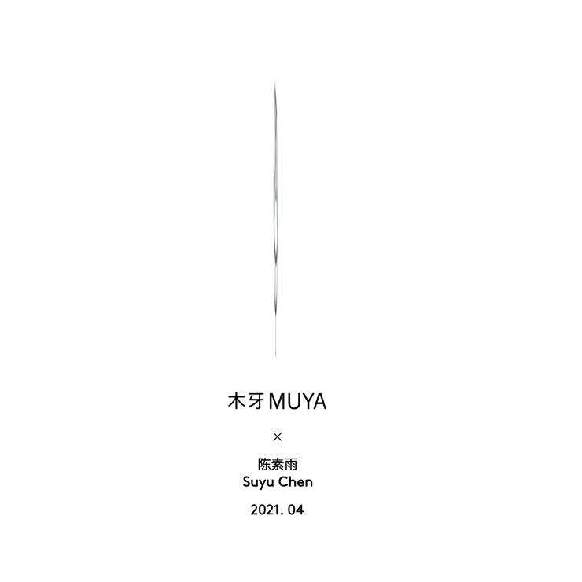

当代首饰的可持续发展 | 陈素雨 Suyu Chen「艺术访谈」
欢迎来到木牙Make Unique Young Arts，让我们来解刨当代首饰的不同形式，材料的可能性，以及可延展方向！
材料是人类可以利用制作有用构件、器件或物品的物质。材料的发展标志着社会的进步，比如石器的广泛使用是“石器时代”，相似的还有“青铜时代”和“铁器时代”等等。材料和资讯与能源被称为现代文明的三大支柱。——《迷人的材料》维基百科
在我们不断跟随快速的脚步前进的时候，总是会有一个声音在叫我们“慢下来，别着急” 而这个声音带领下，我们不断的感知，体会，呼吸，重复。然后，我们走向更远的未来。这个声音可以是我们学习的专业，可以是我们探究的方向，可以是我们热爱的事物，也可以是一个“环”。
今天我们邀请了陈素雨来到木牙MUYA和我们一起来从材料，感知，不断重复，实验等方向来讨论当代首饰是如何探索，进化，以及不断发展的。
Materials are substances from which humans can make useful components, devices, or objects. The development of materials marks the progress of society. For example, the widespread use of stone tools is called the Stone Age, and so is the Bronze Age and the Iron Age. Materials and information and energy have been called the three pillars of modern civilization. –– Fascinating Material, Wikipedia
As we continue to move at a fast pace, there is always a voice that tells us to "slow down, slow down." And this voice leads us to feel, experience, breathe, repeat. And then we go foward to the future. This voice could be a major we study, a direction we explore, something we love, or a "ring".
We invited Suyu Chen join Muya to discuss the exploration, evolution and continuous development of contemporary jewelry from the perspectives of materials, perception, repetition and experiment.

陈素雨，出生于广州，本科毕业于广州美术学院，硕士毕业于美国罗切斯特理工学院金工与首饰系，目前生活工作于罗切斯特和广州。她的作品曾在巴塞罗那JOYA、纽约首饰周、巴尔的摩首饰中心以及北京首饰周上展出。我享受重复的练习，在使用工艺和材料的同时，它们也在训练我。
Suyu Chen, born in Guangzhou, graduated from Guangzhou Academy of Fine Arts with a bachelor's degree and from the Department of Metalworking and Jewelry of Rochester Institute of Technology with a master's degree, currently lives and works in Rochester and Guangzhou. Her work has been exhibited at Barcelona Joya, New York Jewelry Week, Baltimore Jewelry Center and Beijing Jewelry Week.I enjoy the repetition, and they train me as well as using craft and materials.


通过创作与形式、符号相关的珠宝作品，探索实践与仪式、人工物品之间的关系，以及它们之间的相互联系。传统的艺术制作流程，工业生产，以及我所接受的艺术培训的相似之处，都需要大量重复的动作，这让我对结合人工物体的实验实践产生了兴趣。
这是一个物体和我自己之间的游戏——通过一直使用相同的工件作为基本模块，形式的变化和转换没有尽头;所有的感觉和思考，都将通过分层的绘画和打磨，以诚实的错误和不完美，巧妙地展现在表面。我的作品旨在通过观察改变观者对物体和材料的感知。
Through composing jewelry works related to forms and marks, I explore relationships between practices and rituals, artificial objects, and their interconnection. Similarities among traditional art-making processes, industrial production, and art training I received, which all required massive and repetitive actions, led my interests towards experimental practices of combining artificial objects.
It is a game between objects and myself - by keeping using the same artifact as a basic module, variation and transformation of forms have no end; All feeling and thinking will reveal on the surface subtly through layered painting and sanding with honest mistake and imperfection. My work aims to change the viewer’s perception of objects and materials through observation.


➤ 木牙MUYA: 素⾬对于当代⾸饰的理解是什么？想要通过这⼀种形式体现什么？
What is Suyu's understanding of contemporary jewelry? What do you want to embody through this form?
Suyu: 当代首饰是一种介于工艺和纯艺术之间的艺术表现形式，载体一般是人类身体。希望通过双手做一些纪念品式的物件，纪念生活，纪念关系。首饰与人的高互动性决定了它是一种特殊的物件，它可以通过穿戴高调地表达态度，也可以被默默珍藏包裹某些情感。
Contemporary jewelry is a form of artistic expression between craft and pure art, and the carrier is generally the human body. I hope to make some souvenirs by hands to commemorate life and relationship. The high interaction between jewelry and people determines that it is a special object. It can express its attitude through wearing loudly, and it can also be silently treasured and wrapped up with some emotions.

➤ 木牙MUYA:当代⾸饰这⼀专业在国内是⾮常冷⻔的专业，素⾬是如何向⼤家解释⾃⼰的专业的？对于⾃⼰的 就业⽅向是如何考虑的呢？可能就职于哪些职业呢？
The specialty of contemporary jewelry is very unpopular in China. How does Suyu explain his specialty to everyone? How do you consider your own employment direction? What occupations might you work for?
Suyu:直接展示图像甚至实物会更直观，有时会用一个错误的刻板印象告诉身边的人：我做的东西很夸张，可能不能戴出门。目前在学校教首饰选修课，听起来不错实际上分分钟失业。
身边有同学入职设计公司、做bench jeweler（泛指小型工作室、私人珠宝商或者首饰工厂里的珠宝加工师）或者自创品牌，自由度可以很高同时也意味着不稳定。无论是继续从事教育还是尝试买卖，能用首饰养活自己是理想状态，但做点与首饰毫不相干的职业也完全没问题。
It is more intuitive to show images or even real objects directly, sometimes using a false stereotype to tell the people around me that what I make is exaggerated and may not be able to wear out. I'm currently teaching jewelry electives at school. Sounds great. Actually I'm out of work in minutes.
Having a classmate join a design company, work on Bench Jeweler, or create your own brand, can be both a lot of freedom and a lot of instability. Whether you're continuing your education or trying to buy and sell, supporting yourself with jewelry is ideal, but making a career that has nothing to do with jewelry is also perfectly fine.

➤ 木牙MUYA:对于不同材料的理解，素⾬是如何利⽤作品来展现的？随着时代的发展，越来越多的⼈造新型材料随即⽽出，素⾬是否有想过选取其中的⼀些材料来制作新的作品？
How does Suyu use his works to show his understanding of different materials? With the development of the times, more and more man-made new materials are coming out immediately. Has Suyu ever thought about choosing some of these materials to make new works?
Suyu:谈到新型材料和技术，首先想到的是精度越来越高的3D打印以及操作更自由的数码雕塑软件。一直没有将3D打印用作为主要创作材料的一大原因是不爱画草图，对我来说，从建模到打印更像是一个反推的过程，先决定像，再由结构筑像，这与我的创作习惯相反。
当然，这大概是学艺不精一知半解的体现，依然希望有一天能赶上科技的步伐。同时也意识到焦虑将永远伴随在永无止尽的材料和工艺左右，害怕自己变成毫无进步的保守派。如果有新的手工材料面市，特别是雕塑泥、粘合剂和颜料类，欢迎联系我测评。
When it comes to new materials and technologies, the first thing that comes to mind is 3D printing with increasing precision and digital sculpture software with more freedom to operate. One of the reasons why 3D printing has not been used as the main creative material is that I do not like sketching. For me, the process from modeling to printing is more like a backward process, which is to decide the image first and then build the image by the structure, which is contrary to my creative habit.
Of course, this is probably not fine art a little knowledge of the embodiment, still hope to catch up with the pace of science and technology one day. He also realized the anxiety that would always accompany the endless supply of materials and craftsmanship, the fear that he would become a conservative with no progress at all. If there are any new handmade materials on the market, especially sculpture clay, adhesives and pigments, please feel free to contact me for review.


➤ 木牙MUYA:在素⾬所有的作品中，哪⼀个作品或项⽬是⾃⼰最喜欢的，简单谈谈⾃⼰这个作品/项⽬的灵感启发和创作过程？
Among all the works of Suyu, which work or project is my favorite? Please briefly talk about the inspiration and creation process of this work/project?
Suyu:最近的系列“冬日学习”创作于疫情复课的九月初，罗切斯特位于纽约上州安大略湖南边，雪天从11月持续到次年4月，常年多云，非常沉闷。写论文本身是一场业余的心理分析事件，厌倦了强调叙事的学院式训练，想像作画一样去松弛地去摸索一些东西。这个系列是大雪包裹物的一个简单的总结：鹅卵石、树枝、灌木丛、车、房子、花盆、长椅，漫漫大雪给自然及人造物统一了色彩并添上了圆角。材料来自于毕业设计剩下的塑料管。
The most recent series of "Winter Learning" was created in early September, when the outbreak resumed. In Rochester, just south of Lake Ontario in upstate New York, the snow lasted from November to April, and it was often cloudy and depressing. Writing a paper itself is an amateur psychoanalysis event, tired of the emphasis on narrative academic training, want to paint like to relax to explore something. This series is a simple summary of the snow encrusts: pebbles, branches, bushes, cars, houses, flower POTS, benches, the long snow unifies the colors and rounded corners of nature and man-made objects. The material comes from the plastic pipe left over from the graduation project.

➤ 木牙MUYA:素⾬的作品呈现上，作品有⼿持的，佩戴的，环绕的等等。在素⾬的创作和研究过程中，认为材料与⼈体之间的关系和交互感是怎样的呢？
Suyu's works are presented as hand-held, worn, surrounded and so on. In the process of Suyu's creation and research, what is the relationship and mutual feeling between materials and human body?
Suyu:从形态上来说，我理解的首饰是一种闭环：它本身是一个闭环，例如戒指、项链和腰带；或者它创造了一个闭环，例如用发簪挽的发髻，古希腊人用胸针固定披风。因此在创作中始终以造一个“圈”为起点和终点，至于如何佩戴甚至是否佩戴是在制作中、甚至结束后决定的。除此之外，材料散发的视觉刺激也很重要，这种刺激不一定是强烈的，可以是舒缓、好奇的，随时触发令人想观察、触摸甚至闻一下的欲望。同时我对材料重量有些许执念，人对重量的感知是一件微妙的事。如果作品实体比想象中的轻或重太多，我会有失落感，因此在创作中会设法增减作品重量以达到（我认为的）观感与物理的平衡。
Morphologically, I understand jewelry as a closed loop: it is itself a closed loop, such as rings, necklaces and belts; Or it could create a closed loop, such as a hairpin in a bun, or a cloak with a brooch in ancient Greece. Therefore, making a "circle" is always the starting point and end point in the creation, and how to wear it or even whether to wear it is decided during the production or even after the end. In addition, the visual stimulation sent out by the material is also very important. This kind of stimulation is not necessarily strong, but can be soothing and curious. It can trigger people's desire to observe, touch or even smell at any time. At the same time, I have a little obsession with the weight of materials. People's perception of weight is a delicate thing. I feel a sense of loss if the object is much lighter or heavier than I think it is, so I try to add or subtract weight in my work to achieve what I think is a balance between the look and the physical.
➤ 木牙MUYA:在材料的分配上，有很多关于“⾼级材料”和“低级材料”的材料等级划分，从专业的⻆度看来，素⾬是如何看待这样的材料等级化概念的？
In terms of material distribution, there are many grades of "high grade materials" and "low grade materials". From a professional point of view, how does Suyu view such a concept of material grading?
Suyu:高级材料和低级材料是一个相对且流动的概念，当某种材料不再稀有时，它便划入“低级”。对于创作者而言，这个命题并不存在，所有材料在作者手里应是平等且有意义的，无高级与低级之分：它可以是艺术家的私人物品，例如家族相册或者传家宝；可以是吉时出现在脚旁的垃圾。
Advanced materials and low materials are a relative and fluid concept, when a material is no longer rare, it is classified as "low". For the creator, this proposition does not exist. All materials should be equal and meaningful in the hands of the author, without distinction between high and low. They can be the artist's personal belongings, such as family photo albums or heirlooms. It can be the garbage that appears next to your feet when you are lucky.

➤ 木牙MUYA:素⾬是如何看待⾃⼰以及观众对⾃⼰作品解读的权⼒，如果观众的解读背离了⾃⼰制作的初衷的时候作品的意义应该基于⾃我还是观众？
How does Suyu view herself and the audience's right to interpret her works? If the audience's interpretation deviates from the original intention of her production, should the meaning of her works be based on herself or the audience?
Suyu:观众应该有自己的解读的权利，有时候观众能看到作者没有意识到的地方，有时候观众的观点对作者并不重要。当我作为观众时，我享受的是观看带来的情绪变化，其中必然包含了个人经历不同导致的误解。因此在身为创作者时，无法要求观众感同身受，而在作品完成之时，也时常难以分辨它的初衷。
The audience should have the right of their own interpretation, sometimes the audience can see the place that the author is not aware of, sometimes the audience's opinion is not important to the author. When I am a spectator, what I enjoy is the emotional change brought about by watching, which inevitably includes the misunderstanding caused by different personal experiences. Therefore, as a creator, he cannot ask the audience to empathize with him, and when the work is finished, it is often difficult to distinguish its original intention.

➤ 木牙MUYA:素⾬本科是在国内艺术院校就读，之后又有海外留学的经历。在素⾬看来，你如何看待多元化的艺术教育经历的？或是，可以和我们分享⼀下，在不同⽂化影响下，你的有趣创作经历吗？
Suyu studied at an art school in China for your bachelor's degree and then studied abroad. In Suyu's opinion, how do you view the diverse art education experience? Or, can you share with us some interesting creative experiences under the influence of different cultures?
Suyu:无论在国内还是国外，遇到适合自己的院校和导师是一件极需缘分的事。作为一个内向的人，陌生环境很容易把兴奋和热情消耗掉，在生活和学习间快速找到平衡过程很痛苦。在与不同背景的同学老师的交流中得到了很多创作以及饮食启发，发现每个人的作品都与其生活方式密不可分，尝试不同的生活对我来说很重要。
Whether at home or abroad, it is a matter of fate to meet the right colleges and tutors. As an introvert, it's easy to drain your excitement and enthusiasm in an unfamiliar environment. It's painful to find a quick balance between life and study. Through the communication with classmates and teachers from different backgrounds, I got a lot of inspiration on creation and diet. I found that everyone's works are closely related to their lifestyle. It is important for me to try a different life.
✯ Which inspire your works most ✯
“不要着急” / Don't be nervous.

木牙微信订阅号